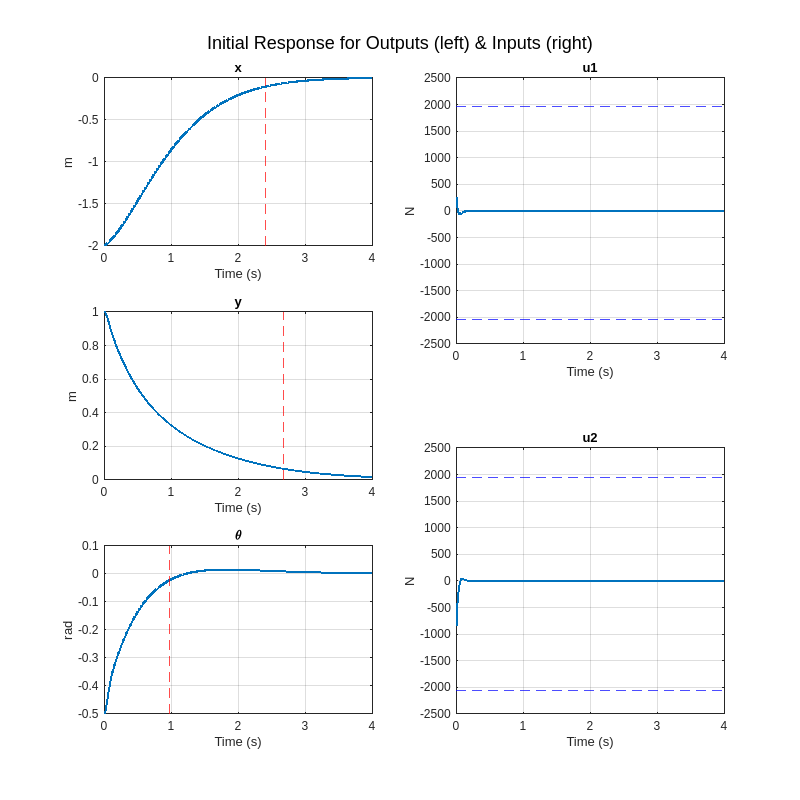
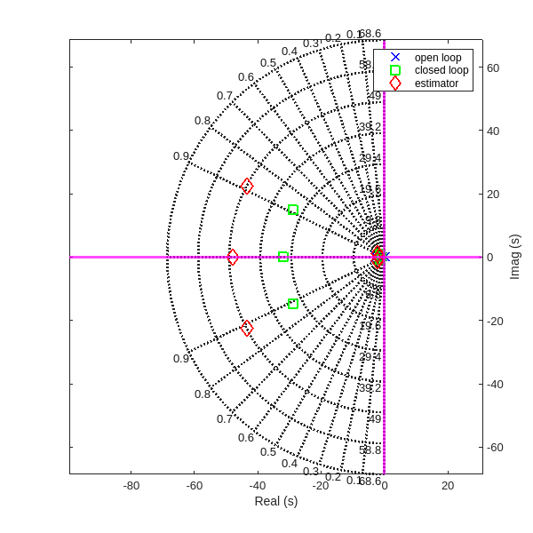
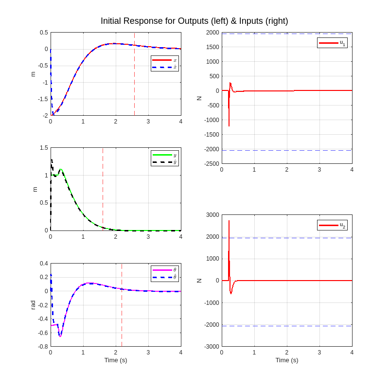

Full State Feedback Control Design
ME5554/AOE5754/ECE5754 Applied Linear Systems - Project II
clear;
set(0,'defaultlinelinewidth',2);
format short;
sympref('FloatingPointOutput',true);CASE 1. Prepare the Open-Loop Plant
The state-space LTI object we developed in the Project I for the open-loop plant should have been saved in a .mat file.
Note: Before we proceed with the implementation, one should be responsible for correcting any errors they have in their open-loop plant! In this case, the plant is provided in my GitHub. One should NOT regenerate the open-loop LTI state-space plant in this LiveScript!!! The open-loop plant MUST be loaded from a .mat file (created in ME5554/AOE5754/ECE5754 Applied Linear Systems - Project I - Linearized LTI Modeling Feedback Control) to avoid discrepancies.
load("MP_nishant_ss_model.mat")After loading the .mat file, display the open-loop numerical state-space model. This model MUST display appropriately chosen statenames, inputnames (ok to use defaults here), and outputnames.
OL_sysOL_sys =
A =
X Position X Velocity Y Position Y Velocity Angular Posi Angular Velo
X Position 0 1 0 0 0 0
X Velocity 0 -1 0 0 -9.81 0
Y Position 0 0 0 1 0 0
Y Velocity 0 0 0 -3 0 0
Angular Posi 0 0 0 0 0 1
Angular Velo 0 0 0 0 0 -1.6
B =
Varitional F Varitional F
X Position 0 0
X Velocity 0 0
Y Position 0 0
Y Velocity 0.1 0.1
Angular Posi 0 0
Angular Velo 0.1302 -0.0898
C =
X Position X Velocity Y Position Y Velocity Angular Posi Angular Velo
X Position 1 0 0 0 0 0
Y Position 0 0 1 0 0 0
Angular Posi 0 0 0 0 1 0
D =
Varitional F Varitional F
X Position 0 0
Y Position 0 0
Angular Posi 0 0
Continuous-time state-space model.
Model PropertiesNext, extract the Aol, Bol, Col, and Dol matrices, but do not display these results (because we already displayed them in the previous step).
Aol = OL_sys.A;
Bol = OL_sys.B;
Col = OL_sys.C;
Dol = OL_sys.D;Compute the open-loop eigenvalues (ol_poles), and the system dimensions (N, M, P). Assign these quantities to variables for use later in the LiveScript, but do not display them here.
ol_poles = eig(Aol)ol_poles = 6x1
0
-1.0000
0
-3.0000
0
-1.6000N = size(Aol,2)N = 6M = size(Bol,2)M = 2P = size(Col,1)P = 3CASE 2. Simulate Closed-Loop Control
We are given the following set of desired closed-loop poles which are known to result in 5% settling times (transient times) that are less than 3 seconds without saturating any of the control signals.
cl_poles = [
-29 + 15i
-29 - 15i
-32 + 0i
-1.6 + 0.76i
-1.6 - 0.76i
-1.2 + 0i];Use the PLACE function to compute the full state feedback control gain matrix, and display our result.
G = place(Aol,Bol,cl_poles)G = 2x6
1.0e+03 *
-1.1332 -0.8551 0.0362 0.1151 4.2932 0.2707
2.4067 1.7537 0.4483 0.1343 -8.6992 -0.3186Assume that the actual plant starts with the following initial conditions (NOTE: These are NEW IC’s!!!):
x0 = -2; % meters
x0dot = 0.5; % meters/sec
y0 = 1; % meters
y0dot = 0; % meters/sec
theta0 = -0.5; % radians
theta0dot = 0.1; % radians/secAssume that we have access to the full state vector, then construct a closed-loop state-space LTI object using the feedback gains from above.
Acl = Aol - Bol*GAcl = 6x6
1.0e+03 *
0 0.0010 0 0 0 0
0 -0.0010 0 0 -0.0098 0
0 0 0 0.0010 0 0
-0.1273 -0.0899 -0.0484 -0.0279 0.4406 0.0048
0 0 0 0 0 0.0010
0.3637 0.2688 0.0355 -0.0029 -1.3402 -0.0655Ccl = Col - Dol*GCcl = 3x6
1 0 0 0 0 0
0 0 1 0 0 0
0 0 0 0 1 0We must augment the output equation to output the original outputs as well as the control signals.
Ccl = [Ccl; -G]Ccl = 5x6
1.0e+03 *
0.0010 0 0 0 0 0
0 0 0.0010 0 0 0
0 0 0 0 0.0010 0
1.1332 0.8551 -0.0362 -0.1151 -4.2932 -0.2707
-2.4067 -1.7537 -0.4483 -0.1343 8.6992 0.3186CL_sys = ss(Acl,[],Ccl,[]);Simulate the initial value response using INITIAL. Choose a final simulation time of 4 seconds for this simulation.
t_final = 4; % seconds
xinit = [x0;x0dot;y0;y0dot;theta0;theta0dot];
[y_ivr,t_ivr] = initial(CL_sys,xinit,t_final);Estimate the 5% settling times for each output.
S = lsiminfo(y_ivr,t_ivr,"SettlingTimeThreshold",0.05);
S(1:3).TransientTime % Settling times in secondsans = 2.4134
ans = 2.6797
ans = 0.9707Generate a plot like what was required for the Midterm Project with the three outputs on the left-hand side (separate axes for each output), and the control signals on the right-hand side of the figure (separate axes for each control signal). Annotate each plot with some kind of marker for the 5% settling times, the min and max allowable control signals, grid lines, axis labels, and units.
f = figure();
u1_min = -2039;
u1_max = 1959;
u2_min = -2057.1;
u2_max = 1940.9;
outputNames = {'x', 'y', '\theta', 'u1','u2'};
outputUnits = {'m', 'm', 'rad','N', 'N'};
inputNames = {'u1', 'u2'};
inputUnits = {'N', 'N'};
for i = 1:3
subplot(3, 2, -1+2*i); % odd numbers for left side
plot(t_ivr, y_ivr(:, i));
index = find((t_ivr-S(i).TransientTime)>0,1);
if index<=size(t_ivr,1)
xline(t_ivr(index),'--r')
end
clear index
title(sprintf('%s', outputNames{i}));
xlabel('Time (s)');
ylabel(sprintf('%s', outputUnits{i}));
grid on
end
for i = 1:2
subplot(2, 2, i*2); % even numbers for right side
plot(t_ivr, y_ivr(:, i+3)); % 4 and 5 for u1 and u2
ylim([-2500,2500])
if i == 1
yline(double(u1_max),'--b')
yline(double(u1_min),'--b')
end
if i == 2
yline(double(u2_max),'--b')
yline(double(u2_min),'--b')
end
title(sprintf('%s', inputNames{(i)}));
xlabel('Time (s)');
ylabel(sprintf('%s', inputUnits{(i)}));
grid on
end
% Adjust the overall plot title
sgtitle('Initial Response for Outputs (left) & Inputs (right)');
set(f,"Position", [0 0 800 800])
In addition to the normal five subplot figure, we must also include the animation plot in the LiveScript as documentation of the performance.
als_f23_animate( t_ivr, y_ivr(:,1), y_ivr(:,2), y_ivr(:,3));CASE 3. Evaluate Observability
First show that this system is completely observable using all three outputs.
Ob = obsv(Aol,Col);
rank(Ob)ans = 6NN = 6Rank of observability matrix is equal to number of states.
Then we determine whether this system is completely observable using any subset of outputs and justify our answers.
For individual outputs
rank(obsv(Aol,Col(1,:)))ans = 4rank(obsv(Aol,Col(2,:)))ans = 2rank(obsv(Aol,Col(3,:)))ans = 2None of the individual outputs obs matrices are full rank
rank(obsv(Aol,Col([1 2],:)))ans = 6rank(obsv(Aol,Col([1 3],:)))ans = 4rank(obsv(Aol,Col([2 3],:)))ans = 4We can see that the combination of ouput 1 & 2 (x & y), has a obs matrix which is full rank meaning the system is obervable using just there 2 outputs.
CASE 4. Design a Full-Order Luenberger Observer
In this CASE, we will compute the gains for a state estimator using all three outputs. We must first choose appropriate pole locations for the state estimator (observer), and then compute and display the associated feedback gain matrix using the PLACE function.
alpha = 1.5;
obs_poles = alpha*cl_poles;% alpha > 1 is faster observer than controller
K = place(Aol.',Col.',obs_poles).'K = 6x3
47.0621 11.3921 -12.6548
59.1867 -53.1150 13.2504
-6.5959 78.7139 -41.1033
63.5968 2.2363 -0.7294
-5.7511 40.1340 10.2240
1.9765 -0.8166 6.4001To document our design, we must generate a plot that includes the open-loop poles from CASE 1, the closed-loop poles from CASE 2, and observer poles from this CASE. Use common markers for each set of poles (i.e. all open-loop poles must use the same marker, etc.) so that it is easy to distinguish the poles on the figure. Include a legend that only has three entries in it (open-loop, closed-loop, observer), corresponding to the three sets of poles. We must use the SGRID function (read the Matlab help!!) to generate appropriate grid lines. We will also annotate our plot with axis labels. Making sure our legend does not cover up any of the poles!
f = figure;
wmax = round(max(abs([cl_poles;ol_poles;obs_poles])));
sgrid(0:0.1:0.9,0:wmax/5:wmax*1.5,"new")
h1 = plot(real(ol_poles),imag(ol_poles),'bx','markersize',10,'linewidth',2);
hold on
h2 = plot(real(cl_poles),imag(cl_poles),'gs','markersize',10,'linewidth',2);
h3 = plot(real(obs_poles),imag(obs_poles),'rd','markersize',10,'linewidth',2);
xlabel('Real (s)')
ylabel('Imag (s)')
xline(0,'m','linewidth',2)
yline(0,'m','linewidth',2)
legend([h1,h2,h3],'open loop','closed loop','estimator');
set(f,"Position", [0 0 600 600])
set(gca,'yaxislocation','right')
axis equal
CASE 5. Simulate Output Feedback Control
For this CASE, we must simulate the complete output feedback control system, which will include the state estimator and full state feedback using the estimated states.
Using the equations for obersever followed by controller we can find, (L14/S29)
\[ \left\lbrack \begin{array}{c} \dot{x} \\ \dot{\hat{x} } \end{array}\right\rbrack =\left\lbrack \begin{array}{cc} A & -B\;G\\ K\;C & \hat{A} -K\hat{C} -\hat{B\;} G-K\left(D-\hat{D} \right)G \end{array}\right\rbrack \left\lbrack \begin{array}{c} x\\ \hat{x} \end{array}\right\rbrack \]
\[ \left\lbrack \begin{array}{c} y\\ \hat{y} \end{array}\right\rbrack =\left\lbrack \begin{array}{cc} C & -D\;G\\ 0 & \hat{C} -\hat{D} \;G \end{array}\right\rbrack \left\lbrack \begin{array}{c} x\\ \hat{x} \end{array}\right\rbrack \]
Assumuing,
\[ \hat{A} =A\;\;\;\;\;\;\;\;\;\;\;\;\hat{B} =B\;\;\;\;\;\;\;\;\;\;\;\;\hat{C} =C\;\;\;\;\;\;\;\;\;\;\;\;\hat{D} =D \]
We can simplify as,
\[ \left\lbrack \begin{array}{c} \dot{x} \\ \dot{\hat{x} } \end{array}\right\rbrack =\left\lbrack \begin{array}{cc} A & -B\;G\\ K\;C & A-K\;C-B\;G \end{array}\right\rbrack \left\lbrack \begin{array}{c} x\\ \hat{x} \end{array}\right\rbrack \]
\[ \left\lbrack \begin{array}{c} y\\ \hat{y} \end{array}\right\rbrack =\left\lbrack \begin{array}{cc} C & -D\;G\\ 0 & C-D\;G \end{array}\right\rbrack \left\lbrack \begin{array}{c} x\\ \hat{x} \end{array}\right\rbrack \]
Augmenting to get back u to plot,
\[ \begin{bmatrix} y \\ \hat{y} \\ u \end{bmatrix} = \begin{bmatrix} C & -DG \\ 0 & C-DG \\ 0 & -G \end{bmatrix} \begin{bmatrix} x \\ \hat{x} \end{bmatrix} \]
In order to insure that the estimated states \(\hat{\mathbf{x}}\) (and outputs \(\hat{\mathbf{y}}\)) have converged before control is enabled, we will first need to generate an augmented LTI closed-loop output-feedback control model with the state feedback gain \(\mathbf{G}\) set to zero (it is easier to just use \(\left(0*\mathbf{G}\right)\) in the matrices). This first LTI object will be used for the first 200 milliseconds of the response. We must use the same initial states on the plant as defined in CASE 2 above, but the initial observer states must be zero. Our closed-loop state-space output equation must also be augmented to output the following three vectors: \(\mathbf{y}\), \(\hat{\mathbf{y}}\), and \(\mathbf{u}\).
xinit_OFC = [xinit;zeros(size(xinit))];
Aofc_G0 = [Aol, -Bol*G*0;
K*Col, Aol-K*Col-Bol*G*0];
Cofc_G0 = [Col, -Dol*G*0;
zeros(size(Col)), Col-Dol*G*0;
zeros(size(G)), -G*0;
eye(6,6),zeros(6,6);
zeros(6,6),eye(6,6)];
OFC_sys_G0 = ss(Aofc_G0,[],Cofc_G0,[])OFC_sys_G0 =
A =
x1 x2 x3 x4 x5 x6 x7 x8 x9 x10 x11 x12
x1 0 1 0 0 0 0 0 0 0 0 0 0
x2 0 -1 0 0 -9.81 0 0 0 0 0 0 0
x3 0 0 0 1 0 0 0 0 0 0 0 0
x4 0 0 0 -3 0 0 0 0 0 0 0 0
x5 0 0 0 0 0 1 0 0 0 0 0 0
x6 0 0 0 0 0 -1.6 0 0 0 0 0 0
x7 47.06 0 11.39 0 -12.65 0 -47.06 1 -11.39 0 12.65 0
x8 59.19 0 -53.12 0 13.25 0 -59.19 -1 53.12 0 -23.06 0
x9 -6.596 0 78.71 0 -41.1 0 6.596 0 -78.71 1 41.1 0
x10 63.6 0 2.236 0 -0.7294 0 -63.6 0 -2.236 -3 0.7294 0
x11 -5.751 0 40.13 0 10.22 0 5.751 0 -40.13 0 -10.22 1
x12 1.976 0 -0.8166 0 6.4 0 -1.976 0 0.8166 0 -6.4 -1.6
B =
Empty matrix: 12-by-0
C =
x1 x2 x3 x4 x5 x6 x7 x8 x9 x10 x11 x12
y1 1 0 0 0 0 0 0 0 0 0 0 0
y2 0 0 1 0 0 0 0 0 0 0 0 0
y3 0 0 0 0 1 0 0 0 0 0 0 0
y4 0 0 0 0 0 0 1 0 0 0 0 0
y5 0 0 0 0 0 0 0 0 1 0 0 0
y6 0 0 0 0 0 0 0 0 0 0 1 0
y7 0 0 0 0 0 0 0 0 0 0 0 0
y8 0 0 0 0 0 0 0 0 0 0 0 0
y9 1 0 0 0 0 0 0 0 0 0 0 0
y10 0 1 0 0 0 0 0 0 0 0 0 0
y11 0 0 1 0 0 0 0 0 0 0 0 0
y12 0 0 0 1 0 0 0 0 0 0 0 0
y13 0 0 0 0 1 0 0 0 0 0 0 0
y14 0 0 0 0 0 1 0 0 0 0 0 0
y15 0 0 0 0 0 0 1 0 0 0 0 0
y16 0 0 0 0 0 0 0 1 0 0 0 0
y17 0 0 0 0 0 0 0 0 1 0 0 0
y18 0 0 0 0 0 0 0 0 0 1 0 0
y19 0 0 0 0 0 0 0 0 0 0 1 0
y20 0 0 0 0 0 0 0 0 0 0 0 1
D =
Empty matrix: 20-by-0
Continuous-time state-space model.
Model PropertiesNext, we must generate a second augmented LTI closed-loop output-feedback control model that is identical to the first model except that the state-feedback control gains are not zero, i.e. the controller is enabled. This second LTI object will be used for the remainder of the simulation.
Aofc = [Aol, -Bol*G;
K*Col, Aol-K*Col-Bol*G];
Cofc = [Col, -Dol*G;
zeros(size(Col)), Col-Dol*G;
zeros(size(G)), -G];
OFC_sys = ss(Aofc,[],Cofc,[])OFC_sys =
A =
x1 x2 x3 x4 x5 x6 x7 x8 x9 x10 x11 x12
x1 0 1 0 0 0 0 0 0 0 0 0 0
x2 0 -1 0 0 -9.81 0 0 0 0 0 0 0
x3 0 0 0 1 0 0 0 0 0 0 0 0
x4 0 0 0 -3 0 0 -127.3 -89.85 -48.45 -24.94 440.6 4.792
x5 0 0 0 0 0 1 0 0 0 0 0 0
x6 0 0 0 0 0 -1.6 363.7 268.8 35.54 -2.918 -1340 -63.86
x7 47.06 0 11.39 0 -12.65 0 -47.06 1 -11.39 0 12.65 0
x8 59.19 0 -53.12 0 13.25 0 -59.19 -1 53.12 0 -23.06 0
x9 -6.596 0 78.71 0 -41.1 0 6.596 0 -78.71 1 41.1 0
x10 63.6 0 2.236 0 -0.7294 0 -190.9 -89.85 -50.68 -27.94 441.3 4.792
x11 -5.751 0 40.13 0 10.22 0 5.751 0 -40.13 0 -10.22 1
x12 1.976 0 -0.8166 0 6.4 0 361.7 268.8 36.36 -2.918 -1347 -65.46
B =
Empty matrix: 12-by-0
C =
x1 x2 x3 x4 x5 x6 x7 x8 x9 x10 x11 x12
y1 1 0 0 0 0 0 0 0 0 0 0 0
y2 0 0 1 0 0 0 0 0 0 0 0 0
y3 0 0 0 0 1 0 0 0 0 0 0 0
y4 0 0 0 0 0 0 1 0 0 0 0 0
y5 0 0 0 0 0 0 0 0 1 0 0 0
y6 0 0 0 0 0 0 0 0 0 0 1 0
y7 0 0 0 0 0 0 1133 855.1 -36.2 -115.1 -4293 -270.7
y8 0 0 0 0 0 0 -2407 -1754 -448.3 -134.3 8699 318.6
D =
Empty matrix: 8-by-0
Continuous-time state-space model.
Model PropertiesWe are now ready to simulate the closed-loop response, but it must happen in two separate simulation stages. In the first stage, we will use the INITIAL function to simulate for 200 milliseconds. At the end of this first simulation stage, we must capture the final state vector and use it as the initial state vector for the second simulation stage. The total simulation duration should be 4 seconds like above.
t_break = 200e-03; % seconds
t_final = 4; % seconds
dt = 0.01;
t_1 = (0:dt:t_break);
t_2 = (t_break+dt):dt:t_final;
[y_1,t_1] = initial(OFC_sys_G0,xinit_OFC,t_1);
xinit_OFC_break = y_1(size(y_1,1),9:20).';
[y_2,t_2] = initial(OFC_sys, xinit_OFC_break,t_2);
y_ivr = [y_1(:,1:8);y_2(:,1:8)];
t_ivr = [t_1;t_2];
S = lsiminfo(y_ivr,t_ivr,"SettlingTimeThreshold",0.05);
S(1:3).TransientTimeans = 2.5721
ans = 1.6099
ans = 2.1822Generate the standard annotated plot (three output subplots on the left and two control signal subplots on the right), with appropriate annotations; but we must also plot the estimated output signals on top of the associated actual output signals. It must be clear from our plots that the estimated outputs all start from zero and converge to the actual outputs within 200 milliseconds. One must NOT try to get the observer states to converge too fast because it will be difficult to see the convergence on the plots. If we have done this step correctly, we should see 5% settling times that are comparable to the original design from CASE 2. The 5% settling times on the outputs must all be below 3 seconds, and we must not saturate either of the control signals.
f = figure();
subplot(3,2,1)
plot(t_ivr,y_ivr(:,1),'r')
hold on
plot(t_ivr,y_ivr(:,4),'--b')
xline(S(1).TransientTime,'--r')
xlim([0,t_final])
legend({'${x}$','$\hat{x}$'},'Interpreter','latex','Location','best')
ylabel('m')
grid on
subplot(3,2,3)
plot(t_ivr,y_ivr(:,2),'g')
hold on
plot(t_ivr,y_ivr(:,5),'--black')
xlim([0,t_final])
xline(S(2).TransientTime,'--r')
legend({'${y}$','$\hat{y}$'},'Interpreter','latex','Location','best')
ylabel('m')
grid on
subplot(3,2,5)
plot(t_ivr,y_ivr(:,3),'m')
hold on
plot(t_ivr,y_ivr(:,6),'--b')
xlim([0,t_final])
xline(S(3).TransientTime,'--r')
legend({'${\theta}$','$\hat{\theta}$'},'Interpreter','latex','Location','best')
xlabel('Time (s)')
ylabel('rad')
grid on
subplot(2,2,2)
plot(t_ivr,y_ivr(:,7),'r')
yline(double(u1_max),'--b')
yline(double(u1_min),'--b')
xlim([0,t_final])
legend('u_1')
ylabel('N')
grid on
subplot(2,2,4)
plot(t_ivr,y_ivr(:,8),'r')
yline(double(u2_max),'--b')
yline(double(u2_min),'--b')
xlim([0,t_final])
legend('u_2')
ylabel('N')
xlabel('Time (s)')
grid on
sgtitle('Initial Response for Outputs (left) & Inputs (right)');
set(f,"Position", [0 0 800 800])
In addition to the normal five subplot figure, I have also included the animation plot in the LiveScript as documentation of the performance. The als_f23_animate.p MATLAB p-code file can be found in the GitHub repository of the project.
als_f23_animate( t_ivr, y_ivr(:,1), y_ivr(:,2), y_ivr(:,3));
For cases 6, 7, and 8, we will design and simulate another Output Feedback Controller (i.e. a state estimator with full state feedback control), but now we must also include Integral Control for reference tracking as defined in the notes.
We must expect to iterate on CASES 6, 7, and 8 until we achieve one acceptable design.
CASE 6. Design an LQI compensator
We must use LQR optimal control to design the state-feedback gains for this simulation. The MathWorks has provided a separate tool called LQI for computing the state-feedback gains when we are implementing state feedback with integral control. Note that LQI is identical to LQR except that LQI already knows that we are designing for reference tracking with an integral controller. We can NOT use LQR for this design, and we must use LQI! We must also use the LTI object for the open-loop system as input to the LQI function. Read the online help for LQI before starting this CASE!
First define the LQI cost function weighting matrices \(\mathbf{Q}\) and \(\mathbf{R}\). Note that LQI also accepts a weighting matrix \(\mathbf{N}\), which allows cross-weighting between states and controls, but we should NOT use this weighting matrix for this CASE! Make sure we understand the dimensions of each of these weighting matrices.
Q = diag([1 1 1 1 1 1 1 1 1])Q = 9x9
1 0 0 0 0 0 0 0 0
0 1 0 0 0 0 0 0 0
0 0 1 0 0 0 0 0 0
0 0 0 1 0 0 0 0 0
0 0 0 0 1 0 0 0 0
0 0 0 0 0 1 0 0 0
0 0 0 0 0 0 1 0 0
0 0 0 0 0 0 0 1 0
0 0 0 0 0 0 0 0 1R = diag([1 2])R = 2x2
1 0
0 2Generate and display the optimal control gains and separate them into \({\mathbf{G}}_0\) and \({\mathbf{G}}_I\) matrices.
OL_int_A = [Aol, zeros(6,3);
-Col, zeros(3,3)];
OL_int_B = [Bol;
-Dol];
OL_int_sys = ss(OL_int_A,OL_int_B,[],[]);
[G,S,e]=lqi(OL_int_sys,Q,R)G = 2x9
-3.2779 -2.4232 3.4413 1.1089 29.9386 11.5472 0.8981 -0.4397 0.0000
1.1514 0.8555 5.0041 1.6054 -11.7328 -4.7892 -0.3109 -0.6351 0.0000
S = 9x9
1.0e+08 *
0.0507 0.0507 0.0000 0.0000 -0.0000 -0.0000 -0.0000 -0.0000 -0.4976
0.0507 0.0507 0.0000 0.0000 -0.0000 -0.0000 -0.0000 -0.0000 -0.4976
0.0000 0.0000 0.0000 0.0000 -0.0000 -0.0000 -0.0000 -0.0000 0.0000
0.0000 0.0000 0.0000 0.0000 -0.0000 -0.0000 -0.0000 -0.0000 0.0000
-0.0000 -0.0000 -0.0000 -0.0000 0.0000 0.0000 0.0000 0.0000 0.0000
-0.0000 -0.0000 -0.0000 -0.0000 0.0000 0.0000 0.0000 0.0000 0.0000
-0.0000 -0.0000 -0.0000 -0.0000 0.0000 0.0000 0.0000 0.0000 0.0000
-0.0000 -0.0000 -0.0000 -0.0000 0.0000 0.0000 0.0000 0.0000 0.0000
-0.4976 -0.4976 0.0000 0.0000 0.0000 0.0000 0.0000 0.0000 4.8816
e = 9x1 complex
-0.0000 + 0.0000i
-0.1348 + 0.1327i
-0.1348 - 0.1327i
-0.5013 + 0.7953i
-0.5013 - 0.7953i
-0.9185 + 0.3250i
-0.9185 - 0.3250i
-1.6934 + 0.0000i
-3.0023 + 0.0000iCASE 7. Construct the OFC with Reference Inputs
Generate an augmented state-space system for the closed-loop Output Feedback Controller (state feedback with estimated states) and Reference Tracking. Our complete closed-loop state-space model must have:
{ State vector consisting of: \(\mathbf{x}\), \(\hat{\mathbf{x}}\), and \({\mathbf{x}}_I\) }
{ Output vector consisting of: \(\mathbf{y}\), \(\hat{\mathit{\mathbf{y}}}\), and \(\mathbf{u}\) }
{ Input vector consisting of: \(\mathbf{r}\) }
{ State Feedback Control law: \(u=-\left\lbrack \begin{array}{cc} {\mathbf{G}}_0 & {\mathbf{G}}_I \end{array}\right\rbrack \left\lbrack \begin{array}{c} \hat{\mathbf{x}} \\ {\mathbf{x}}_I \end{array}\right\rbrack\) }
After generating the closed-loop output feedback control state-space model, compute and display the closed-loop eigenvalues.
CASE 8. Simulate the Output Feedback Controller with Reference Inputs
For this CASE, we will simulate the closed-loop response of our control system using LSIM(); however, we must first generate a suitable reference profile as an input. Before we can generate a reference profile, we need to understand the initial position and the final desired position of the drone. These are new initial conditions, and a very different final position from any closed-loop simulation we have done before.
Initial Plant Conditions: The plant (drone) must start with the following initial states:
\(x\left(0\right)=-2\) m, \(y\left(0\right)=1\) m, and \(\theta \left(0\right)=0\) rad.
\(\dot{x} \left(0\right)=0\) m/s, \(\dot{y} \left(0\right)=0\) m/s, and \(\dot{\theta} \left(0\right)=0\) rad/s.
Initial Observer Conditions: We may assume that the initial observer states are identical to the initial plant states.
Final Plant Conditions: The plant (drone) must reach the following final states:
\(x\left(0\right)=+2\) m, \(y\left(0\right)=0\) m, and \(\theta \left(0\right)=0\) rad.
\(\dot{x} \left(0\right)=0\) m/s, \(\dot{y} \left(0\right)=0\) m/s, and \(\dot{\theta} \left(0\right)=0\) rad/s.
Evaluation Criteria:
Notice that the final state is on the opposite side of the 1.5m high red wall in the animation! The drone is NOT allowed to make contact with the wall at any point during the simulation.
The drone is NOT allowed to make contact with the ground at any point during the simulation except for the final time where the drone must sit on the ground.
{ The drone must reach the final state by 30 seconds (\(\textrm{tfinal}\le 30s\)). }
The control signals \(u_1\) and \(u_2\) must remain within the saturation bounds established in the Midterm Project.
{ There is NO formal settling time requirement; however, our actual output responses \(\mathbf{y}\) must track the reference responses \(\mathbf{r}\)reasonably accurately. For example, if our reference profiles have dwell regions, then there should be zero steady-state error after transients have subsided. If our reference profiles have ramp regions, then we should expect to see a steady-state error during the ramp, which looks like a delayed response. How closely we track the references will depend on our choice of weighting coefficients in the Q matrix. Note that a steady-state error during the ramp is perfectly acceptable as long as we choose the reference profile such that the drone does not make contact with the wall! }
For this simulation, the observer and the controller must both be enabled at t=0 (i.e. do NOT attempt a two-stage simulation like CASE 5).
We MUST use
LSIMto simulate the closed-loop time response{ Before constructing the reference profiles, we must first construct a time vector for the simulation. I recommend choosing a uniform step size of \(\textrm{ts}=0\ldotp 002\) seconds: }
\[ t=\textrm{ts}*\left\lbrack 0:\textrm{round}\left(\frac{\textrm{tfinal}}{\left.\textrm{ts}\right)}\right)\right\rbrack \]
- For each time step in the time vector, we must generate a reference vector for each of the outputs. We will need to generate a particular path vs. time profile for the desired x and y position; however, I recommend choosing the following reference profile for the angular position:
\[ \theta_{\textrm{ref}} =\textrm{zeros}\left(\textrm{size}\left(t\right)\right) \]
- I have used the same plot structure as before except that new signals that must be added. Each of the three output subplots on the left include the reference profile, the actual output, and the estimated output on the same axis.
- Our main goal should be able to reach the final state in a minimum time.
SIMULATION RESULT